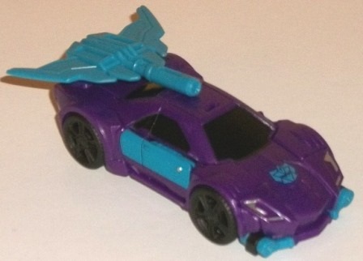

Menasor
"Generation 2" Giftset (Combiner Wars) [Online Retailer Exclusive]
Menasor
"Generation 2" Giftset (Combiner Wars) [Online Retailer Exclusive]
Allegiances
: Decepticon (Generation
2)
Set Price
: $100 (U.S.)
(NOTE: Because this set is composed of repaints,
this is not a full-blown review. This mainly covers any changes made to
the set and the color scheme, and merely compares it to the original versions
of these molds. For a review on the mass-release Blackjack, go
here
.
For a review on the mass-release Dead End-- the mold used for both Dead
End and Brake-Neck-- go
here
. For a review
on the mass-release Breakdown, go
here
.
For a review on the mass-release Dragstrip, go
here
.
For a review on the mass-release Motormaster, go
here
.)
Blackjack
(G2)

Size
: Legend
Difficulty of Transformation
: Easy
Color Scheme
: Dark semi-metallic
purple, moderately light flat teal, and some moderately light semi-metallic
teal, black, silver, and red
Individual Rating
: 9.5
There was no G2 release
of Blackjack, so this version is sort of "made up" based off of G2 Motormaster's
colors, for the most part. His primary color is a really, REALLY nice shade
of dark semi-metallic purple. The plastic isn't actually metallic, but
there's a lot of glitter in it and it looks awesome. Plus, it's just a
great Decepticon color. The main contrast color against this purple is
a light milky teal plastic (with a slight variance of this color as paint
being a little darker and semi-metallic-- it's not a huge difference, but
noticeable). This is certainly a very "G2-y" color, and does an excellent
job contrasting against the dark purple. There's also a fair amount of
black on the figure, used not just on the car windows and wheels but also
the robot kneecaps, on part of the upper arms, and on a few minor parts.
It's an okay color, but unfortunately the purple around it is dark enough
where it doesn't contrast enough, in my opinion-- I would've liked a little
more of some other color like silver, which is only used on Blackjack's
headlights and face. Speaking of the face, the red visor and silver faceplate
work excellently against the teal head, and it all looks awesome.
No mold changes have
been made to this version of Blackjack.
Brake-Neck
(G2)
Size
: Deluxe
Difficulty of Transformation to Robot
:
Easy
Difficulty of Transformation to Leg
:
Very Easy
Difficulty of Transformation to Arm
:
Easy
Color Scheme
: Milky yellow, moderately
dark blue, and some light milky brownish gray, black, silver, dark metallic
purple, red, white, dull pumpkin orange, milky teal, and light red
Individual Rating
: 9.0
Brake-Neck-- aka Wildrider--
is, just like the exclusive
"normal G1 deco"
version, a redeco of the CW Dead End mold. He follows his cancelled G2
release color scheme quite closely, with his major colors here being yellow
and a somewhat dark blue-- a far cry from his dark G1 scheme. Now, if you've
been following my reviews for a while, you'll know I'm not generally a
fan of the color yellow in large amounts, and G2 Brake-Neck does nothing
here to change that. That said, although Brake-Neck has a pretty good amount
of black on him to contrast against the yellow in the traditional "Bumblebee"
manner, the moderately dark blue is a really nice, attractive shade of
the color and looks better than the black against the yellow. This blue
really makes the color scheme, if you ask me, particularly in robot mode
where it's a bit more apparent with the hands and upper legs. The mold's
tailpipe-beatdown weapon is merely painted blue over the yellow plastic,
and unfortunately it scratches off somewhat easily, so be a bit careful
with it. It's rather odd that only the front and side windows in car mode
are blue, though, while the rear window is black. Speaking of the black,
beyond the obvious tires and said rear window, in G2 style fashion they're
on a nice triangle pattern on the front hood making a nice large G2 Decepticon
symbol, and is also used to a good extent on Brake-Neck's head and chest.
(The metallic purple face and red eyes on the head look downright eeevil,
and really fitting for the character.) There's some light milky gray plastic
as well, mostly visible in robot mode on the combiner connector port, knees,
and waist-- not a major color, thankfully, because it's an ugly brownish
shade as well. It just looks bad. Thankfully there's also a fair amount
of silver, not just on the wheel hubs, but on the headlights, lower arms,
and lower legs. (Sadly, there's no paint whatsoever on the back end of
the car mode.) Aping his G2 toy, Brake-Neck also has a rather odd multi-colored
bunch of paint apps on his vehicle mode roof, involving various blocks/stripes
of white, light red, black, and blue. It's kinda weird, but adds some uniqueness
to his scheme. Like the other limb-bots for G2 Menasor, Brake-Neck's hand/foot/gun
is a nice shade of milky teal, which contrasts against his yellow pretty
similiarly to his dark blue.
Brake-Neck has the same
headsculpt as his "G1 deco" version, but no mold changes have been made
to him specifically for this version.
Breakdown
(G2)
Size
: Deluxe
Difficulty of Transformation to Robot
:
Easy
Difficulty of Transformation to Leg
:
Very Easy
Difficulty of Transformation to Arm
:
Very Easy
Color Scheme
: Light sea foam green,
moderately dark metallic purple, dark semi-metallic purple, and some silver,
moderately dark blue, red, moderately light flat teal, metallic bronze,
black, metallic black, and fuchsia
Individual Rating
: 7.6
Breakdown has the most
"history" of the G2 redecoes here, with the original coming out in a limited
capacity at BotCon 1994 and a "re-do" of that toy-- without the combining
aspect-- done at
BotCon 2010
. I'm not sure
if it's because of this or because G2 Breakdown's original color scheme
was loud even by G2 standards, but this Combiner Wars version of G2 Breakdown
has the most changes from the original, next to G2 Motormaster. Granted,
it's still easily recognizable as G2 Breakdown-- the main color is an incredibly
unrealistic light sea foam green (a bit paler than the sea foam green used
on previous releases of this color scheme). However, the other main color
has been changed from pink to a dark metallic purple. This frankly looks
considerably better than the pink-- accurate to the source or not-- because
not only does the purple contrast against the seafoam green more, but helps
tie in Breakdown a bit more color-wise to Motormaster and Blackjack. The
bronze from the original is kept, but only used on the car windows and
not on any parts of the robot mode. (The bronze goes GREAT against the
sea-foam green, by the by, and I like the black outlines around the bronze
as well as the "94 RACING" bit on the window, which calls back to the BotCon
in which the original was released.) In place of much of the bronze is
a fair amount of silver, which is used mostly on the robot mode chest,
with a lesser amount used on the wheel hubs and part of the sword. (The
rest of his sword is a nice fuchsia color, which both contrasts against
the seafoam green and complements the purple-- I wish it was used a tad
more on the toy.) His robot face is also painted a nice accurate dark blue--
the same great color as that on Brake-Neck-- with some red eyes. The whole
combo of that with the purple "helmet" on the head looks really darned
awesome. In another G2 nod, Breakdown has an angular black paint app across
much of his front hood, and though his G2 Decepticon symbol there is fairly
large, it's not nearly as large proportionally as it should be, due to
the mold detailing on the hood. There's also plenty of purple paint on
the lower robot legs and bottom rims of the vehicle mode, but this comes
at a cost; there are somewhat large spaces of the toy that are all seafoam
green, like the back half of the vehicle mode and the robot arms. I really
miss the silly "paint splatter"-esque paint app on the roof that was on
the previous releases of G2 Breakdown; it really would've helped the vehicle
mode a bit more. Oddly, Breakdown's hand/foot/gun accessory is a paler,
flatter teal than that used for the rest of the team-- I guess because
of the mold breakup, they had to paint most of it and just decided to make
the rest of the plastic on the weapon a similar shade so it didn't stick
out too much.
No mold changes have
been made to this version of Breakdown.
Dead
End (G2)


Size
: Deluxe
Difficulty of Transformation to Robot
:
Easy
Difficulty of Transformation to Leg
:
Very Easy
Difficulty of Transformation to Arm
:
Easy
Color Scheme
: Milky cherry red,
black, and some silver, milky teal, light milky brownish gray, moderately
dark blue, red, pale yellow, and white
Individual Rating
: 9.6
Dead End is colored like
his G2 namesake in being a somewhat bright, cherry red, though its brightness
has been dulled compared to the cancelled original release. It's a great
main color, and the bit of "milkiness" to it makes it look slightly more
like a car finish in vehicle mode (slightly). Dead End also has the same
awesome color of dark blue that is used on a good amount of Brake-Neck/Wildrider,
but not as much-- only on Dead End's tailpipe weapon, front bumper, head
and part of the chest, and on bits of the lower legs. Still, it contrasts
excellently with the red and looks fantastic. Same with the milky teal
used for Dead End's hand/foot/gun weapon. Unfortunately, Dead End also
has the same ugly light brownish gray plastic that Brake-Neck has, on his
waist, knees, tailpipe, combiner connector, and a few other minor bits.
Again, it's not a major color, but it's still an ugly one and a more "pure"
gray or silver would've worked better here. Besides the cherry red, Dead
End's other major color is black-- mostly visible in robot mode, which
makes said mode look a bit more "grounded" than many of his fellow Stunticons.
Needless to say, the black on the wheels, upper legs, lower arms, and shoulders
contrasts quite well with the red. He also has a similar large black paint
app on his front hood, with a large G2 Decepticon symbol in the middle
of it, just like Brake-Neck. Dead End's wheel hubs and windows are silver,
the latter of which doesn't quite pack the "punch" color-wise of Brake-Neck's
blue windows, but still looks pretty good-- and hey, even the rear window
is painted, that's a rarity! Although Dead End doesn't quite have all the
"unique" paint apps that his canceled G2 toy did, he does have the white-to-yellow
"flame lines" along the sides, which are a nice little detail and obviously
contrast against the red nicely. There's even a little silver-painted "gas
cap" near the back of one of these lines, with a little G2 Decepticon symbol
on it-- that's a nice little extra. Dead End's blue head has a nice red
visor and a yellow faceplate, but the yellow paint isn't quite thick/dark
enough to completely "blot out" the blue under it-- it's a little "see-through",
which is unfortunate since otherwise the color scheme looks pretty ace
on his head.
No mold changes have
been made to this version of Dead End.
Dragstrip
(G2)
Size
: Deluxe
Difficulty of Transformation to Robot
:
Easy
Difficulty of Transformation to Leg
:
Very Easy
Difficulty of Transformation to Arm
:
Easy
Color Scheme
: Black, moderately
dark blue, and some silver, orangish yellow, red, metallic black, dark
purple, moderately light blue, and milky teal
Rating
: 9.4
Dragstrip is, again,
an homage to the unreleased G2 Stunticon toy. Dragstrip is definitely the
odd 'Con out of the bunch, though; he actually has a fairly dark, realistic
color scheme. He's mostly black, with a good amount of that nice moderately
dark blue that's on Brake-Neck and Dead End. Although both colors contrast
against each other very well, the dark blue doesn't look quite as nice
of a shade on the black, for some reason. I'm honestly not sure why. There
is some nice metallic black used on the backside of Dragstrip's lower legs--
for some reason those parts seem to always be painted on this mold, and
I love the metallic black, but man... that makes me wish all his black
had been that nice shade. For a light color, Dragstrip still has a bit
of his G1 orangish-yellow, though it's used sparingly-- just on the combiner
port and on the drivers' seat area in vehicle mode. It's not my favorite
color in the world by any means, but again, it gives him at least a little
"light". I would've preferred the gold on the cancelled G2 toy in its place,
though. There's also a fair amount of silver paint-- on the bars connecting
to the front wheels in vehicle mode, as well as on the wheel hubs, elbows,
the bar details near the back end of the vehicle mode, and on the face.
(The combination of a blue head, silver face, and red eye strip look really
darned cool on an already amazing headsculpt.) Sadly, because of either
paint budget or space limitations, the more "G2-y" unique paint apps on
the original cancelled toy are minimal on this CW version. The light-blue-and-dark-purple
checkered pattern is present on the spoiler, but it's such a ridiculously
tiny spoiler in the first place that this doesn't amount to much. The blue
paint splash/flame paint apps on the front and sides of the original are
completely absent, being replaced with more straightforward blue paint
apps. Like most of the other deluxe Stunticons in this set, Dragstrip's
weapons are a nice milky teal, which contrasts against the darker colors
as well as complements the darker blue-- it's quite a nice accent shade.
No mold changes have
been made to this version of Dragstrip.
Motormaster
(G2)
Size
: Voyager
Difficulty of Transformation to Robot
:
Medium
Difficulty of Transformation to Torso
:
Easy
Color Scheme
: Moderately dark metallic
purple, moderately dark blue, and some black, silver, moderately dark metallic
blue, moderately light blue, and red
Individual Rating
: 8.2
Motormaster has the most
changes compared to his original cancelled G2 toy, mostly because the original
toy had a trailer attached to it. The cancelled G2 Motormaster toy had
a LOT of bright blue plastic, as well as a pretty good amount of seafoam
green as well. The seafoam green has been completely removed from this
"Combiner Wars" version of the color scheme, and the blue has been darkened
a fair amount to the point where it's the same moderately dark blue as
that on Brake-Neck and Dead End. What IS carried over pretty much unchanged
is the dark purple, which is pretty much on the exact same areas in the
truck mode as they are on the cancelled G2 toy. There's also a bit of black,
mostly used on the wheels but also the robot hips, to get a bit more "dark"
in there. As a whole, the purple and dark blue color scheme looks pretty
darned good, given that both are excellent shades of each color. As already
mentioned in my reviews of the other G2 Stunticons, the purple is a really
nice metallic shade, and the blue is an attractive shade as well. Plus,
blue and purple go together pretty well too, which is always good. There
is a bit of the same light blue used on the original G2 toy, but it's been
relegated to the windows and headlights of the vehicle mode-- which is
fine by me, it makes an excellent accent color and both contrasts and complements
the purple and darker blue in particular. (That said, as with the other
versions of this mold, the odd "breakup" of the paint apps on the side
windows looks really weird.) There's also a fair amount of silver, which
serves as an excellent neutral color on the front grill, faces, torso mode
abs, and sword in particular. Finally, in a move that is completely new
to this version and wasn't on the G2 toy at all, Motormaster also has red
as an accent color, used not just on the stripes on the sides of the vehicle
mode, but on various small areas of the robot mode to boot and on the combiner
face eyes, which looks great.. It contrasts excellently against the blue
and purple, and helps add a bit of a "warm" color to the whole thing. Really,
the whole package together just looks amazing if you're at all into G2
color schemes-- it's loud, but it's still great. Motormaster has my favorite
color scheme of this set.
No obvious mold changes
have been made to this version of Motormaster, but the "uneven hips" problem
the first releases of this mold and
CW Optimus Prime
had have been fixed, thankfully.
Menasor
(G2) (Combined Form)
Individual Rating
: 8.4
All combined together,
Menasor looks like he's mostly formed from Starburst candy. Blue, teal,
yellow, cherry red, grapey purple, seafoam green... they totally don't
go together, and it's a very loud color scheme, there's no doubt about
it. Most combiners have appendages that don't really "match" their torsos
and are very obviously five (or six) robots combined together-- and again,
Menasor is no exception here. Dragstrip, as already mentioned, also looks
a little out-of-place, given how dark his general scheme is compared to
the rest of the set. However, that said, the teal on the hands, feet, and
chest, as well as the dark blue on everyone except Breakdown (who has seafoam
green, which is sorta kinda in the same general area of the color wheel)--
it all does tie together the various color schemes a bit into a cohesive
whole, giving the team a bit of "theme" despite how different they all
are, which I appreciate. Still, this certainly isn't a piece for everyone,
and the Motormaster mold is definitely the weakest Combiner Wars torso
mold.
Menasor (G2) Bio
:
Menasor could be the ultimate weapon.
Until the Stunticons can set aside their rivalries, he's best unleashed
to demolish what he can in fits of fearsome but unfocused rage.
The "Generation 2" color
scheme for Menasor is just "Starburst-juicy", and is pretty much one of
THE prime examples of the G2 loudness and fruitiness of many of the toys
of the early '90s. Quite frankly, you're either into it or you're not--
I love it, and as far as colors go this is my personal favorite of the
Combiner Wars boxsets overall. However, your mileage may certainly vary,
and I do wish Hasbro would cool it with using two of the same mold with
different heads for two different characters on the same combiner. This
set was also over-produced in proportion to demand, it seems, and you can
usually get this set for cheaper than buying the mass-release versions
separately. Thus, if you're on the fence about which version to get, I'd
get this boxset-- but if these very unrealistic, fairly loud colors put
you off, well there's your clue right there to get the original versions
instead.
Reviews by Beastbot
Back to Transformers:
Generations Index